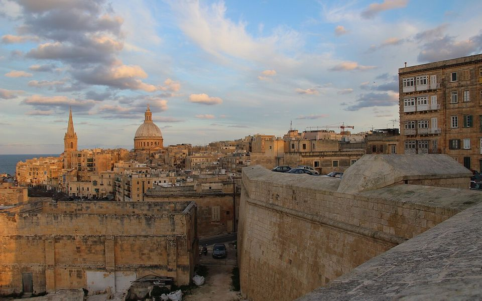
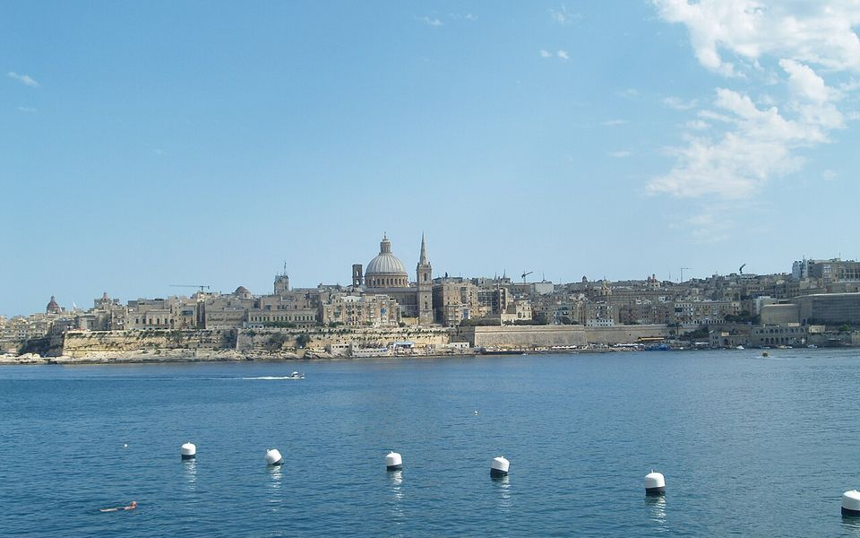
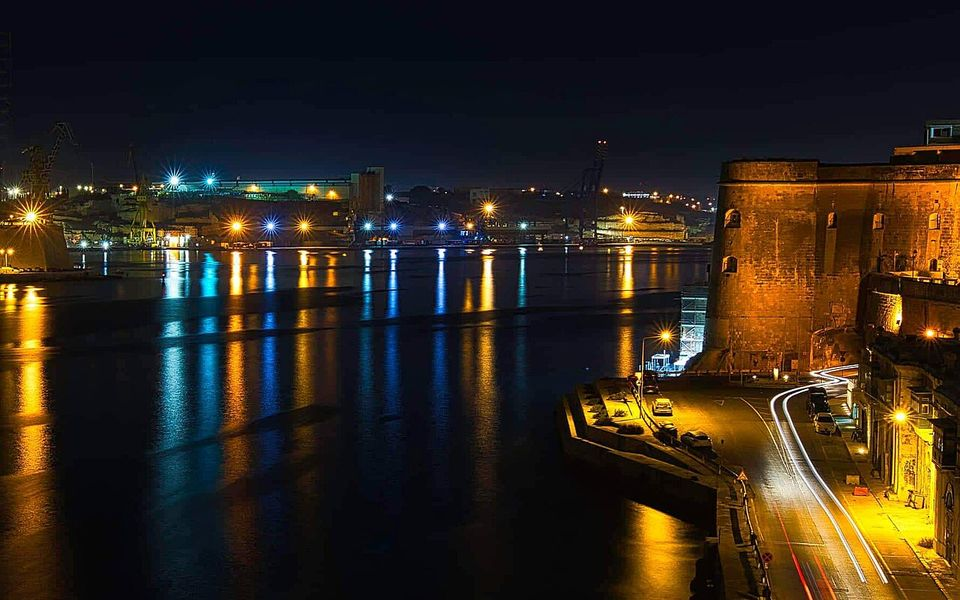
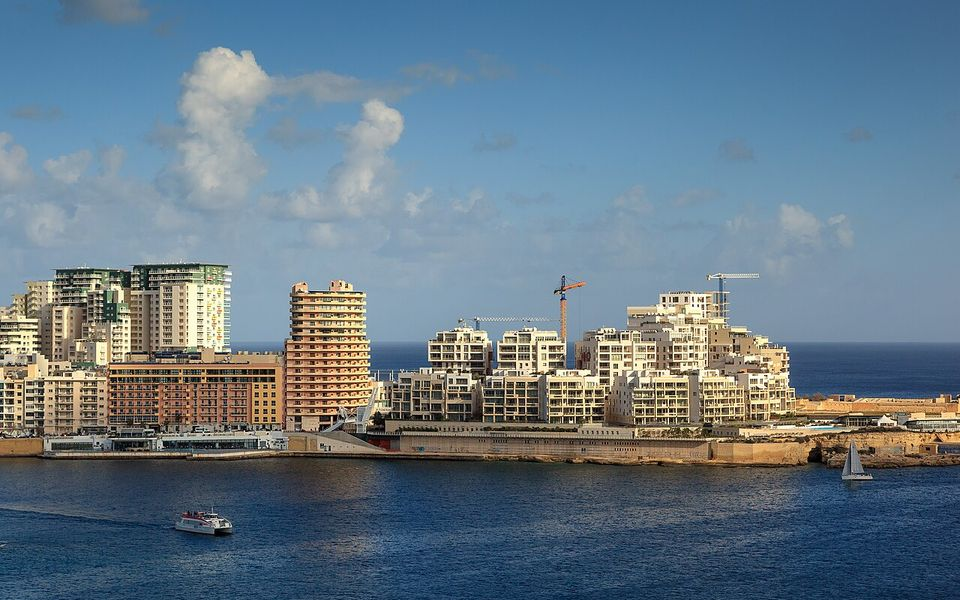
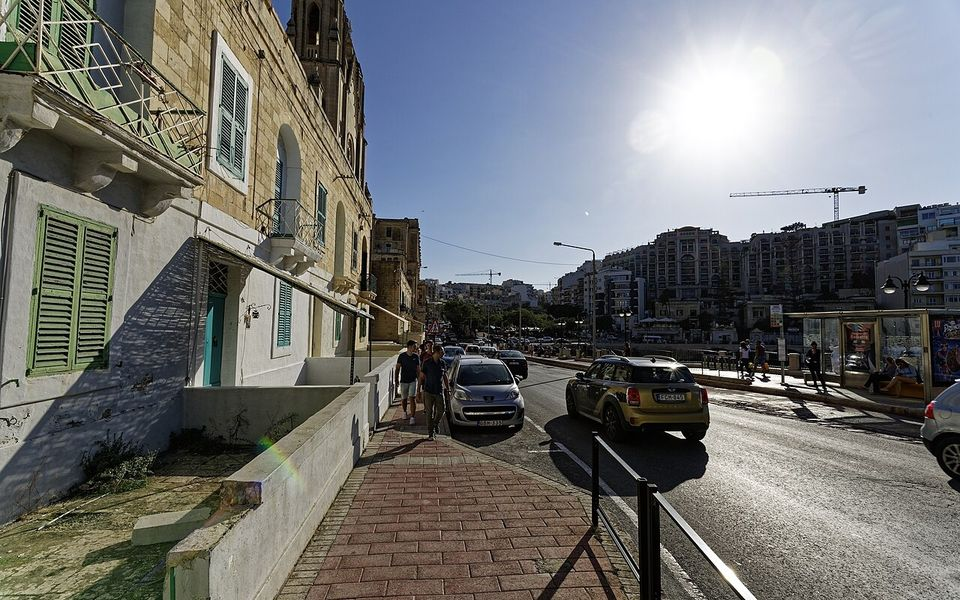
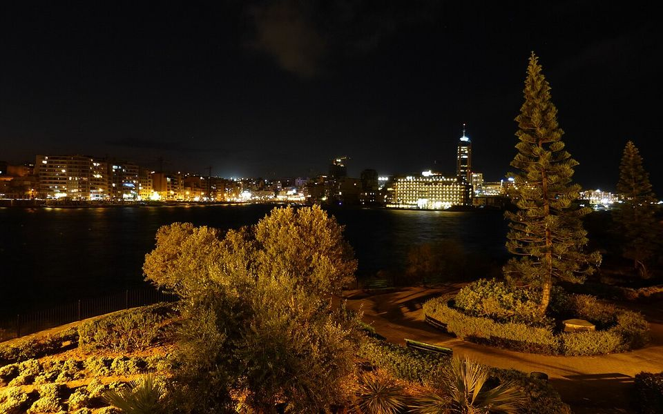
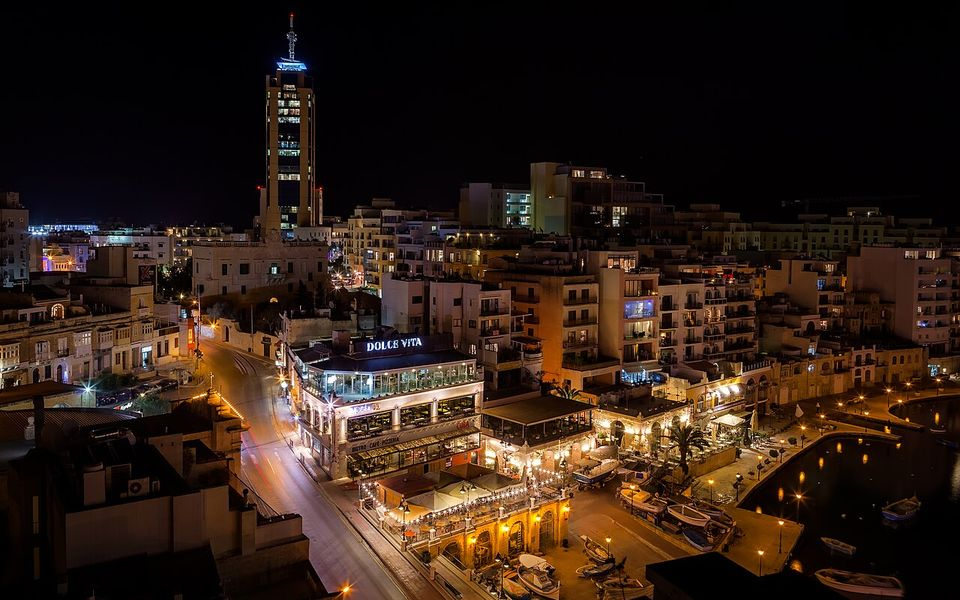
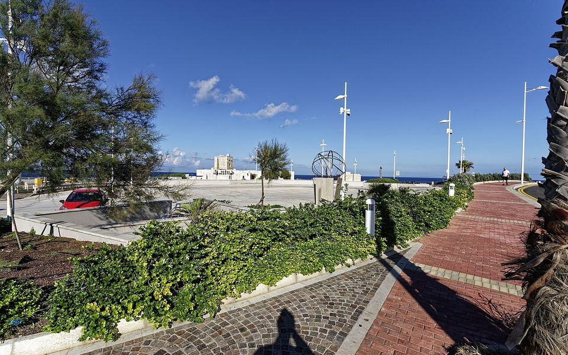
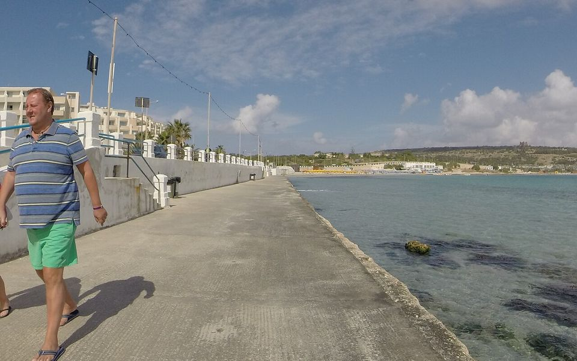

1Malta today · Blue recommends · 27 November 2026
Malta's eight best rooftops, from Valletta to Mellieħa
Harbour sunsets, infinity pools and the island's highest views: eight rooftop bars and terraces worth the lift ride, in order of a trip from Valletta up the coast.
By CompareMalta.ai

Photos: Keith Ruffles, CC BY 3.0, Wikimedia Commons
Malta's skyline has grown up, and so has its rooftop scene. These eight picks come from independent rooftop and food guides, and cover different moods: a quiet drink over Valletta, a pool day in St Julian's, or sunset cocktails over Mellieħa Bay.
They are not ranked against each other, because the best one depends on what you want. Instead they are ordered like a day out, starting in Valletta and heading north. Several are hotel rooftops with pools or seasonal opening, so check before you go, especially in winter.
Our eight

2The Rooftop at The Embassy
A rooftop restaurant and lounge with a pool on top of Valletta, city and sea views, and a degustation menu if you want to make an evening of it.
Photos: Marika Caruana, CC BY-SA 4.0, Wikimedia Commons

3Lounge 360 & TemptAsian
One of the best-known terraces on the island, looking across Sliema's rooftops and the sea. By day there is an infinity pool; at sunset it turns into a lounge with sushi and Asian fusion.
Photos: Anton Zelenov, CC BY-SA 4.0, Wikimedia Commons

4The Skyroom
High above the Tower Road promenade, with wide sea and island views and a grill menu, so it works for dinner as well as drinks.
Photos: Txllxt TxllxT, CC BY-SA 4.0, Wikimedia Commons

5
6Infinity by Hugo's
A luxury rooftop with a long infinity pool and hot tubs above St Julian's, plus international dishes and champagne. The place for a special occasion.
Photos: Anton Zelenov, CC BY-SA 4.0, Wikimedia Commons

7Taza Sky Bar
Views over St Paul's Bay and the open sea from the tenth floor, with an infinity pool and the lowest cocktail prices of these eight in The Rooftop Guide's listing.
Photos: Txllxt TxllxT, CC BY-SA 4.0, Wikimedia Commons

8Rooftop pools are often for hotel guests or open only in season, and dress codes and minimum spends vary, so book or call ahead. For dinner ideas below the rooftops, see Restaurants and Blue's picks on CompareMalta.ai.
Sources: The Rooftop Guide: rooftop bars in Malta · Guide Me Malta: rooftop bars and restaurants · The Punk Rock Princess: rooftop bars in Malta